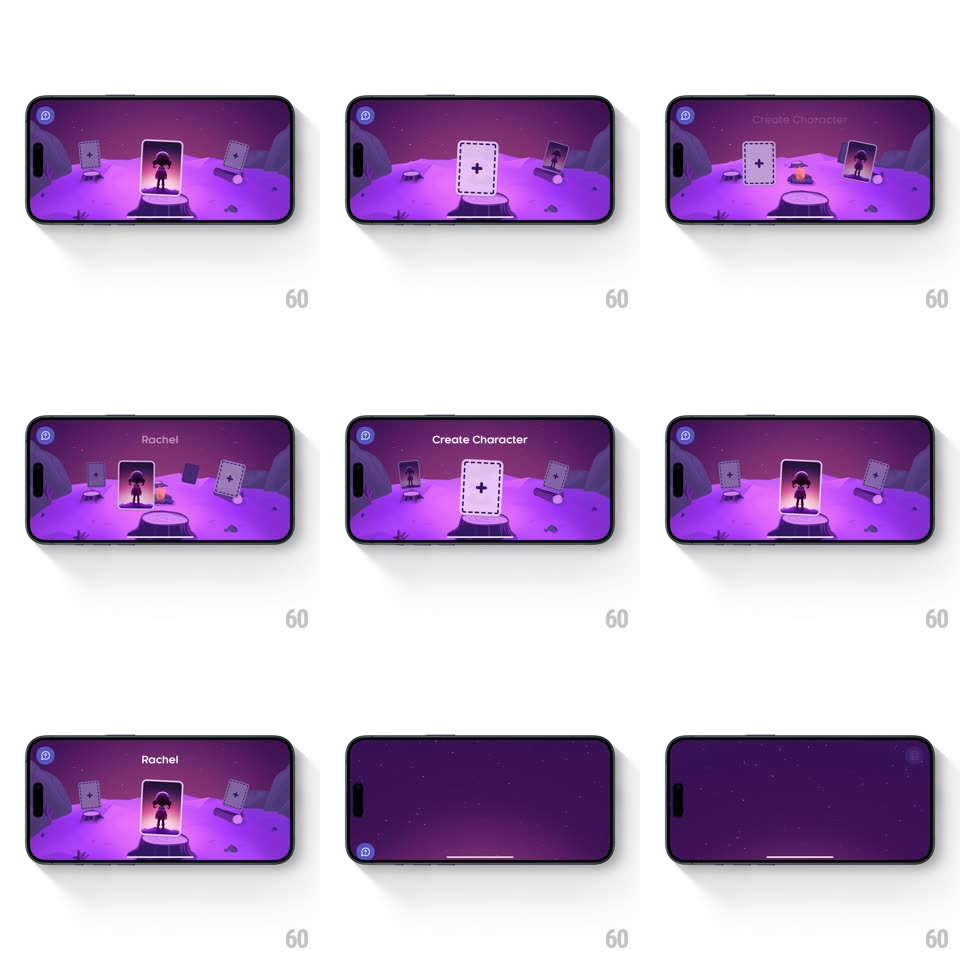

Media
Frame-by-frame

Rebuild this interaction 1:1: Super's character picker - a purple moonlit landscape where character cards stand on stone pedestals; swiping cycles them with 3D depth (side cards smaller, dimmer, tilted), the center card glowing, and the character's name ("Rachel") fading in above.

Rebuild this interaction 1:1: Super's character picker - a purple moonlit landscape where character cards stand on stone pedestals; swiping cycles them with 3D depth (side cards smaller, dimmer, tilted), the center card glowing, and the character's name ("Rachel") fading in above.
## Integration
Integration: stack-agnostic spec - springs given as stiffness/damping, timed motions as duration + curve; map every value to your framework and animation library of choice.
## Scene
Landscape: violet terrain, stars, distant rocks. Three visible slots: center pedestal large and lit, left/right pedestals smaller and shadowed. Cards show silhouetted characters; the create slot is a dashed card with a "+". Header "Create Character" top-left with a back button.
## Motion spec
Pattern: depth-based 3D carousel with springy center snap.
- Swipe: cards orbit along an arc - the outgoing center card shrinks (scale 1 -> 0.7), dims (brightness -30%), tilts (rotateY ~25deg), and sinks slightly, while the incoming card does the reverse into the center; the far slot's card slides off-stage.
- Release: snap to the nearest card (spring ~300/18, one soft overshoot) - the center pedestal's glow flares as the card lands (radial light, 300ms).
- The character's name fades in above the pedestal (250ms) only after the card settles - labels belong to settled states.
- The create ("+") card behaves like the others but its dashed border marches slowly (ant-march, 1s loop) - it invites.
- Selecting: the card pulses (scale 1.04, spring ~420/16) and the scene fades toward the editor.
## Calibration
- Exactly three slots visible - depth, not a coverflow parade.
- Tilt and scale move together - the arc reads as one orbit, not layered effects.
## Reduced motion
Cards crossfade at center; name fades immediately.
## Don't miss
- The pedestals are fixed - the CARDS move between them, which keeps the world stable.
- The center glow is the selection state - no separate highlight chrome.